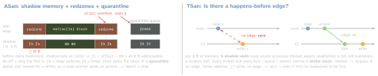

debugging · folio
In one line: Memory and threading bugs corrupt silently and crash later, elsewhere. Sanitizers are compiler instrumentation + a runtime that check every access as it happens and report the first bad access with the stacks that explain it. Runtime checkers — Main Thread Checker (MTC), Thread Performance Checker (TPC), exclusivity — need no special build. ASan and TSan cost 2–20× and their runtimes are not meant for production: Debug schemes, test plans, CI. Hardware memory tagging is the one built to ship.
Download PDF Print view LaTeX source


Tool → catches → cost → where
| tool | catches | cost | where |
|---|---|---|---|
| ASan | heap / stack / global overflow, use-after-free, use-after-scope, double + invalid free; use-after-return opt-in. C + Swift | 2–5× CPU, 2–3× mem | device + Simulator |
| TSan | data races, Swift access races, NS/CF mutable-collection races, bad mutexes, thread leaks | 2–20× CPU, 5–10× mem | Simulator, 64-bit macOS |
| UBSan | C UB: divide by 0, misaligned, null, signed overflow, shift, bool / enum, bounds. Not Swift (Swift traps itself) | ≈20 % CPU | with ASan or TSan |
| MSan | uninitialised reads | 3× | not Apple |
| MTC | UIKit / AppKit / WebKit API off main | 1–2 %; launch +≤100 ms | on by default |
| TPC | priority inversion; sync I/O + networking on main | minimal | Run; macOS + iOS |
| HW tags | use-after-free, out-of-bounds: pointer tag ≠ memory tag | ships | A19+, M5+ chips |
| Exclusivity | overlapping inout / mutating access (Swift) | small | Release too |
| Dynamic isolation | actor-isolated code called off its actor | crash, not race | Swift 6 mode |
Malloc debugging (scheme checkboxes): Scribble alloc → 0xAA, free → 0x55 · Guard Edges a guard page each side of blocks ≥4096 B · Guard Malloc own VM page per alloc, freed page removed (Mac + Simulator) · Malloc Stack alloc backtraces in the Memory Graph.
How they work
- ASan replaces
malloc/free, checks both buffers ofmemcpy-style calls;halt_on_error=1: the first report ends the run. Misses leaks, uninitialised reads, integer overflow.-O1trims its memory (TSan too). - TSan instruments accesses and sync calls;
halt_on_error=0: it keeps running, one report per race. Swift 6 mode rejects races at compile time, but@unchecked Sendableandnonisolated(unsafe)switch that check off — TSan still sees them, and C / ObjC. - MTC / TPC swap system methods for thread-checking variants — no recompile;
libMainThreadChecker.dylibcan be injected into an existing macOS binary. TPC:dispatch_semaphore_wait/dispatch_group_waitcannot donate priority → inversion; silence known ones withPERFC_SUPPRESSION_FILE. - Zombies: freed objects stay as zombies (
NSDeallocateZombies=NO): “message sent to deallocated instance” + trap. Field signs:objc_msgSend/objc_retain/objc_releaseon top, or an unrecognised selector (memory reused). - HW tags: Enhanced Security → Enable Hardware Memory Tagging (
…checked-allocationsentitlement); soft mode writes a simulated crash report instead of killing — off before users get the build. - Exclusivity: static where provable, dynamic (
swift_beginAccess) for class properties, statics, globals, escaping closures;-enforce-exclusivity=uncheckeddrops the Release checks. Dynamic isolation (SE-0423):@objcthunks,@preconcurrencyconformances, closures passed to unaudited APIs;-disable-dynamic-actor-isolationopts out.
Since
Xcode 7 ASan · 8 TSan · 9 UBSan, MTC, Swift access races · Swift 5 exclusivity checks in Release · Xcode 14 TPC · Swift 6 dynamic actor isolation · Xcode 26 runtime issues in tests, no Zombies template, C++ container-overflow on · Xcode 27 ASan on 27.0 OSes needs ≥26.5.
Turning them on
clang -fsanitize=address (or thread, undefined) · swiftc -sanitize=address (or thread; no UBSan) · xcodebuild test -enableAddressSanitizer YES (…Thread…, …UndefinedBehavior…). Scheme → Run → Diagnostics; tests: test-plan configurations, one per sanitizer. Runtime API Checking warns by default; On (as Failure) fails the test. UBSan continues after a report; -fno-sanitize-recover exits, -fsanitize-trap traps (SIGILL / SIGTRAP, no runtime). Container-overflow noise: ASAN_OPTIONS=detect_container_overflow=0 in the Run scheme and each ASan test plan — build settings cannot switch it off.
Reading a report (ASan, abridged)
==4242==ERROR: AddressSanitizer: heap-use-after-free
READ of size 8 at 0x60200000eff0 thread T0
#0 parse_header buf.c:42 // 1 WHERE: bad access
0x60200000eff0 is located 0 bytes inside of 16-byte region
freed by thread T0 here:
#1 conn_close conn.c:88 // 2 WHO freed it
previously allocated by thread T0 here:
#1 conn_open conn.c:31 // 3 WHO made it
SUMMARY: AddressSanitizer: heap-use-after-free buf.c:42Bug type first, then three stacks: access, free, allocation — the fix is usually in #2 or #3, not #1. More shadow bytes: f1/f2/f3 stack left / mid / right redzone · f5 stack after return · f8 after scope · f9 global redzone · fc container overflow.
TSan WARNING: ThreadSanitizer: data race: Write … by thread T3 + Previous read … by main thread — two stacks, two threads, one address, no edge: fix the ownership (actor, serial queue, Mutex), not the timing. Other kinds: Swift access race · thread leak · lock-order-inversion (potential deadlock) · invalid or unlocked mutex · signal-unsafe call inside of a signal.
Exclusivity trap at run time
final class Counter { var n = 0 }
func bump(_ x: inout Int, by c: Counter) { x += c.n }
let c = Counter()
bump(&c.n, by: c) // modify of c.n open, then a read of c.n
// Simultaneous accesses to 0x..., but modification requires
// exclusive access. Previous access (a modification) started
// at ... Current access (a read) started at: swift_beginAccessTraps
- ASan + TSan in one run — impossible: two test-plan configurations, two CI runs.
- Clean TSan run ≠ race-free: unexecuted interleavings and overwritten slots go unseen.
- Crash on
0x400000000000bad0: synthesizednonatomicObjC setters briefly store this sentinel — two threads mutated the property.
Remember
ASan = where memory, TSan = when threads, UBSan = C rules, MTC / TPC = the main thread, tags = the one that ships. Crash here, not later.